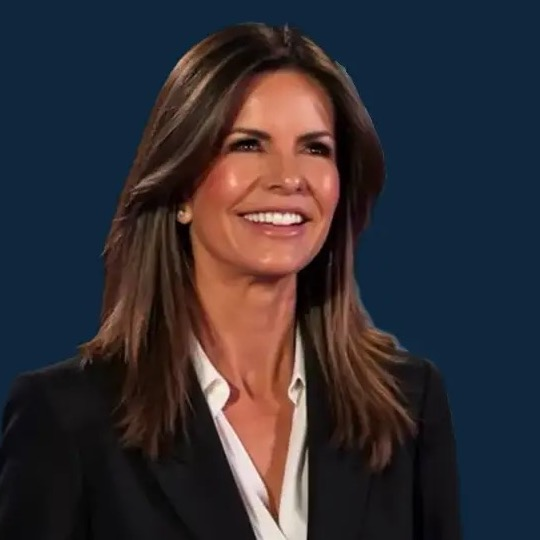
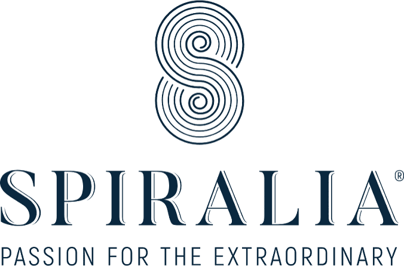
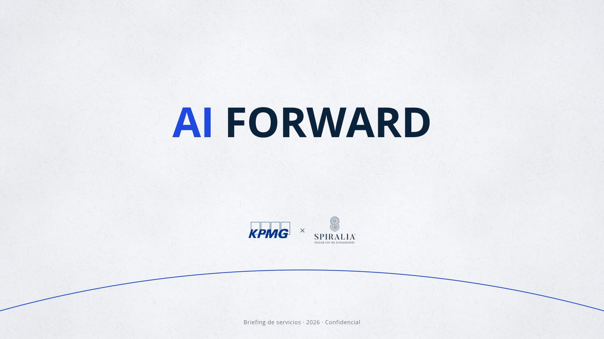
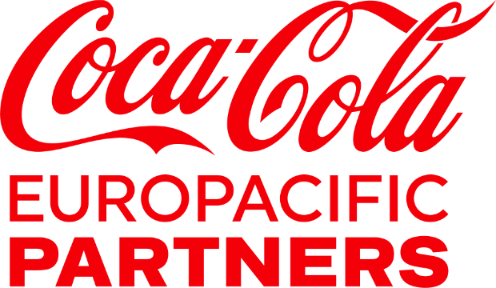
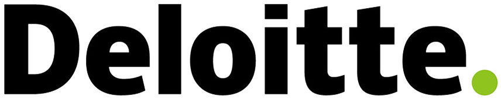
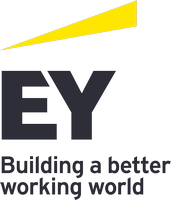
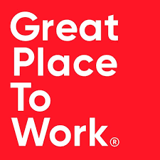
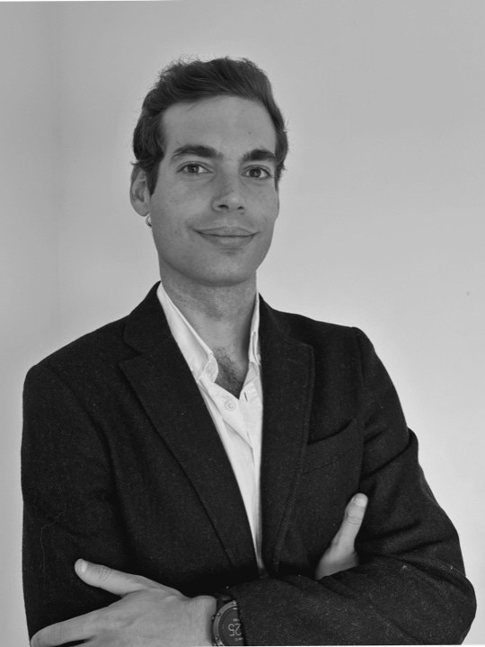
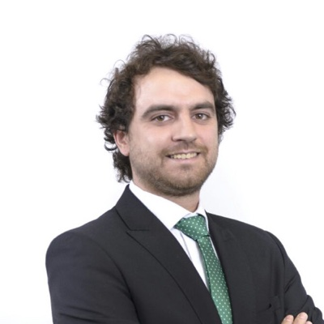
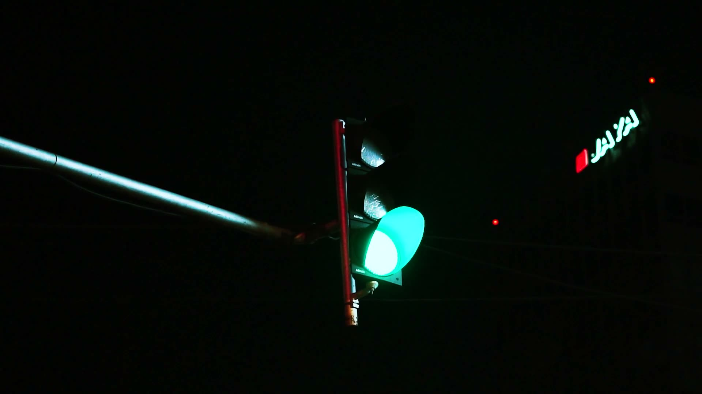

Ana Iza
CEO & Co-Founder
Spiralia
Ex-McKinsey
Executive MBA por IE Business School. Más de una década liderando Spiralia.
Dirección del proyecto y relación con KPMG


Deployed by design
alumnos formados en IA aplicada a negocio.





CEO & Co-Founder
Spiralia
Ex-McKinsey
Executive MBA por IE Business School. Más de una década liderando Spiralia.
Dirección del proyecto y relación con KPMG
Director del área de
Strategy Consulting
Spiralia
Ex-KPMG
Experiencia en consultoría estratégica, transformación y trabajo con comités de dirección.
Estrategia, procesos y modelo operativo

Director del área de
AI & Digital Transformation
Spiralia
Ex-KPMG · Ex-EY-Parthenon
Profesor del Grado en Inteligencia Artificial de la UFV. Director Académico y profesor titular de Power IA en thePower.
IA aplicada a negocio y formación por área

Head of
AI Deployment
Spiralia
Ex-CTO y cofundador de GETHER y Tappy
MBA por IE Business School. Más de una década construyendo producto y tecnología al frente de equipos multidisciplinares.
Despliegue de la IA y equipo FDE
Hemos estado al otro lado de la mesa: venimos de la consultoría estratégica (McKinsey, KPMG, EY-Parthenon) y de construir tecnología. Con FDE y coaches de Spiralia trabajando junto a cada área.
Formación de toda la organización, del comité de dirección a las oficinas y el contact center, diseñada alrededor del trabajo real.
satisfacción con el uso de IA en España: nº 1 del grupo, 1,4 puntos por encima del segundo país
de crecimiento en usuarios activos semanales tras el programa, según la medición interna de ING
Hoy: transformación completa de áreas, mano a mano con los equipos.
Formación de seis áreas en seis semanas, conectada con sus dolores, tareas y oportunidades.
casos de uso identificados por los propios equipos
catálogos priorizados, uno por área, con referentes que los mantienen vivos
218 casos identificados no son 218 despliegues: son el punto de partida de SPIRAL.
Hoy: los casos elegidos avanzan hacia solución y operación.
Venimos de la consultoría estratégica. Empezamos por entender de verdad el negocio, sus procesos y a su gente; la tecnología viene después.
No buscamos hacer lo mismo un poco más rápido, sino repensar cómo se trabaja. Lo incremental llega solo; lo transformador hay que diseñarlo.
Trabajamos las dos palancas: la eficiencia, hacer lo mismo con menos, y la eficacia, hacer mejor lo que importa y crecer.
Nuestros FDE se sientan con los equipos y construyen con ellos, sobre su trabajo real.
Ayudamos a crear vuestro propio modelo de gobierno para que los equipos acaben creando y construyendo solos.
Nuestro mejor resultado:
equipos que ya no nos necesitan.
de los encuestados dice que la IA le ha hecho más productivo
atribuye a la IA al menos un 5 % de su EBIT y un valor significativo
La IA ya ayuda a casi todas las personas.
Solo cambia la cuenta de resultados de unas pocas empresas.
Ese 6 % no se distingue por la IA que tiene, sino por cómo y cuánto la despliega: rediseña a fondo el trabajo en lugar de añadir IA a lo de siempre.
No será la herramienta. Será lo que cada empresa consiga que la IA haga dentro de su trabajo.
El mismo modelo de IA está al alcance de todas. Lo que separa a unas de otras es cómo lo despliegan:
han rediseñado a fondo sus procesos por la IA. La diferencia no está en qué IA compran, sino en el trabajo que cambian.
Lo máximo que puede aportar la eficiencia es el coste de ese proceso.
Hacer mejor el trabajo, decidir mejor y crecer no tiene techo.
encuestados dicen que su empresa busca eficiencia con la IA, sea o no de las que más valor sacan.
De las que más valor sacan a la IA, el 74 % la usa también para crecer. En el resto, el 47 %.
Por eso trabajamos las dos palancas a la vez: rediseñar procesos para ganar eficiencia y usar la IA para hacer mejor el trabajo y crecer.
Porque saber usar una herramienta no cambia, por sí solo, cómo se hace el trabajo.
La formación enseña a usar la herramienta. Es imprescindible, pero el procedimiento escrito casi nunca cuenta cómo se trabaja de verdad.
El valor aparece al sentarse junto a quien hace el trabajo, ver sus excepciones y su criterio, y rediseñarlo desde ahí.
Desplegar es conseguir que la IA asuma trabajo real: con usuarios reales, en los sistemas de la casa, con una persona donde importa y con un dueño que responde de ella.
Formación específica para cada área, sobre su trabajo y sus herramientas. Crea lenguaje común, hábito y champions, y hace aflorar dónde está el valor.
ING: toda la organización, del comité de dirección al contact center. Coca-Cola Europacific Partners: seis áreas.
Un equipo de Spiralia se sienta con el área, entiende su día a día, decide con ella dónde entra la IA y construye los agentes y soluciones, rápido y junto al equipo. Después, los despliega y deja la capacidad en casa.
Es lo que hacemos hoy en ING y en Coca-Cola Europacific Partners: transformación completa de áreas, mano a mano con los equipos.
Las iniciales de los seis pasos forman el nombre de nuestro método: SPIRAL (Skill · Pair · Identify · Rebuild · Assure · Launch). Lo verás paso a paso más adelante.
La oportunidad de los líderes es aprovechar la energía de una plantilla que ya sabe usar la IA para rediseñar el trabajo de principio a fin, rápido y a escala.
Ni solo Tecnología ni solo el negocio. Un perfil que une los dos mundos: el FDE.
FDE · Forward Deployed Engineer, literalmente «ingeniero desplegado en primera línea». No trabaja desde un departamento de sistemas: se sienta con el equipo de negocio, entiende cómo se trabaja de verdad y construye allí mismo la solución.
Dos tipos de criterio que rara vez están en la misma persona.
Tecnología sabe qué se puede construir. El negocio sabe qué importa. Nosotros decidimos con vosotros dónde entra la IA, y la construimos.
Lo hemos convertido en un método con nombre propio: SPIRAL.
Son las palabras de cualquier conversación sobre IA, casi siempre mezcladas. SPIRAL las ordena en seis pasos. Al pasar el ratón, cada palabra se explica.
FDEForward Deployed Engineer: un perfil que se sienta con el negocio y construye allí mismo la solución. Es como experto de negocio y constructor en la misma mesa.
Equipo activado y mapa de oportunidades
Mapa real del trabajo
Caso elegido, fronteras y línea base
Una solución que funciona con casos reales
Informe de evidencia y decisión
Solución en operación, con dueño
S abre el camino en cada área. P-I-R-A-L se repite por cada flujo de trabajo, en ciclos cortos. Cada vuelta deja una solución en marcha y más capacidad en casa.
Así vive el área cada vuelta de la espiral: el experto y el FDE avanzan juntos, de la primera conversación a la solución en uso.
El FDE y el experto del área forman pareja.
El FDE vive el día a día: excepciones, atajos y criterio.
Se elige qué cambiar por valor, repetición y datos.
Agentes y flujos, junto a quien hace el trabajo.
Casos reales, varios usuarios y fallos a la vista.
En uso real, con supervisión y un dueño.
↺ Al terminar, la espiral sigue: siguiente flujo de trabajo, otra vuelta, un nivel más arriba.
La tracción: que cada área sepa usar la IA en lo suyo, no en ejemplos genéricos.
Formación específica para el área, con sus casos, sus documentos y las herramientas que ya tiene la firma. Práctica guiada desde el primer minuto.
Aprende usando la IA en su propio trabajo. Y empieza a señalar dónde le duele y qué podría hacerse de otra manera.
«¿Dónde nos duele, y qué podríamos hacer distinto?»
En Coca-Cola Europacific Partners, formar a seis áreas hizo aflorar 218 casos de uso identificados por los propios equipos.
LA REGLANo se transforma lo que nadie sabe usar.
Un FDE de Spiralia forma pareja con los expertos del área y observa cómo se trabaja de verdad.
El FDE se sienta con el equipo, en su puesto y con sus herramientas: correos, Excel, sistemas y aprobaciones. Sigue los casos de principio a fin, también los raros.
Alguien que pregunta «¿y esto por qué se hace así?» y no se conforma con el procedimiento escrito.
«¿Cómo se trabaja de verdad aquí?»
Los mejores casos no se ven desde un catálogo: aparecen al sentarse junto a quien hace el trabajo.
LA REGLANo se puede rediseñar lo que no se ha visto.
Somos nosotros quienes proponemos dónde entra la IA. Lo decidimos con vosotros.
Se priorizan las oportunidades por valor, repetición, volumen y datos disponibles. Y, paso a paso del proceso, se decide quién hace cada cosa.
«¿Dónde entra la IA, y dónde no?»
Cuando las entradas y el resultado esperado son predecibles.
Cuando el objetivo está claro, pero cambian los datos, el camino o las acciones.
Cuando hay ambigüedad, responsabilidad o una consecuencia que no se puede deshacer.
LA REGLANo todo necesita un agente.
Se rediseña el flujo completo, no solo una tarea, y el FDE construye los agentes y las soluciones en ciclos cortos.
El flujo se dibuja de nuevo desde el resultado. El FDE construye sobre los sistemas y las herramientas de la casa, y enseña cada versión al equipo.
Ve su propio proceso funcionando de otra manera y lo corrige sobre la marcha.
«¿Funciona en nuestro día a día?»
Un paso más rápido. El proceso no cambia.
Menos pasos, decisiones nuevas e IA dentro del proceso.
LA REGLASe construye con el equipo, no para el equipo.
Antes de usarla de verdad, la solución se examina con casos reales del área.
Se reúnen casos reales, normales, raros y de riesgo, con la respuesta buena firmada por el experto. Se mide acierto, calidad y errores, y se comprueba cuándo pasa el caso a una persona.
«¿Podemos confiar en ello?»
| Caso | Dato correcto | Pasos completos | Igual que el experto | ¿Qué hace? |
|---|---|---|---|---|
| Normal | ✓ | ✓ | ✓ | Actúa |
| Caso límite | ✓ | ✓ | ✗ | Pasa a una persona |
| Información incompleta | ✗ | — | — | Pasa a una persona |
| Petición ambigua | ✓ | ✗ | — | Pasa a una persona |
| Alto riesgo | ✓ | ✓ | ✓ | Decide una persona |
Pasar el caso a una persona también es una respuesta correcta.
LA REGLANo se confía en lo que no se ha medido.
La solución entra en uso real poco a poco y se queda en manos de su dueño en la firma.
Primero, uso limitado y supervisado. Se miden la adopción y el valor frente a la línea base. Después, el traspaso: manual de operación, pruebas y formación para quien la va a mantener.
«¿Quién la opera mañana?»
Trabaja en paralelo; no toca nada.
Propone; la persona decide.
Ejecuta lo que una persona aprueba.
Actúa sola dentro de unos márgenes.
Autonomía amplia, con registro y revisión.
LA REGLALa autonomía se gana con evidencia.
«By design» quiere decir que la seguridad y el control no se añaden al final: vienen incluidos desde el principio.
Construimos dentro de los sistemas de la firma, con las herramientas que aprueba IT.
Es como trabajar en vuestra oficina, con vuestras llaves.La IA prepara y propone. Donde hay criterio, riesgo o cliente, decide una persona.
Es como un buen asistente: lo deja todo listo, pero no firma.Siempre se puede ver qué hizo la IA y por qué.
Es como la caja negra de un avión.La IA empieza observando y solo hace más cuando demuestra que acierta.
Es como un nuevo fichaje: primero acompaña, luego ayuda y después hace.Cualquier solución se puede pausar o retirar sin parar el trabajo.
Es como el botón de deshacer.Cada solución tiene una persona de la firma que responde de ella.
Es como el capitán de un barco.Un proceso que vive cualquier socio o director: de la petición de un cliente a la propuesta lista para firmar.
PObservar a varios directores preparando propuestas de verdad.
IDecidir qué hace el agente y qué decide siempre el director.
RConstruirlo sobre las plantillas y repositorios de la firma.
AProbarlo con propuestas pasadas, revisadas por un director.
LLanzarlo con un grupo reducido y medir frente a la línea base.
Lo es. Cada vuelta de SPIRAL deja a vuestros equipos más capaces de seguir creando y construyendo solos.
Además de las soluciones, construimos con vosotros las reglas del juego: quién hace qué, cómo se trabaja y con qué herramientas. Es lo que convierte unos cuantos casos de éxito en una capacidad de la firma.
Quién propone, quién decide, quién construye y quién responde.
Cómo nace, se prueba y se despliega una solución.
Dónde se construye y dónde queda todo.
Lo diseñamos con vosotros, lo probamos en las primeras vueltas de SPIRAL y lo dejamos funcionando. Así los equipos pueden seguir creando y construyendo por su cuenta.
Con cada vuelta de la espiral, vuestros equipos asumen más y nosotros, menos. El objetivo es que acaben siendo autosuficientes.
Spiralia lidera las primeras vueltas; vuestro equipo aprende haciendo.
Vuestros constructores lideran; nosotros acompañamos y revisamos.
Equipos autosuficientes, con su propio modelo de gobierno. Nosotros, solo si nos necesitáis.
SPIRAL arranca en un lugar concreto. Basta con que se crucen tres condiciones:
Volumen, tiempo, calidad, riesgo o una decisión que hoy limita al área.
Personas, sistemas, datos, excepciones y el criterio del experto; no solo el procedimiento.
Un socio o director que patrocine, decida y, si funciona, lo escale.
Con eso empezamos: formación del área y primera vuelta de SPIRAL sobre el flujo de trabajo que más pese.
¿Dónde se cruzan hoy estas tres condiciones en vuestra área?

Formar a cada área, entender su día a día, decidir dónde entra la IA, construirla con el equipo, desplegarla con control y dejar a los equipos capaces de seguir solos. Un solo recorrido, con nombre propio: SPIRAL.